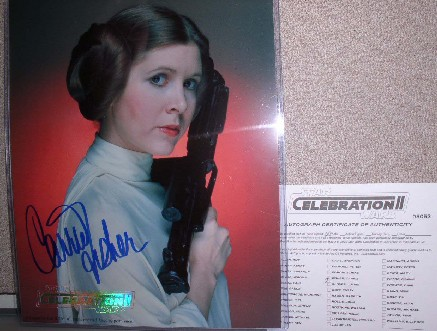

In our February Newsletter, we chronicled the hard work and dedication of international fan sensation Bart Barenbrug as he traveled from one side of this galaxy to the other. His desire was to collect Star Wars autographs at various conventions across Europe to donate for an auction benefiting the Starlight Starbright Children's Foundation. With the help of his wonderful girlfriend Andrea, Bart managed to put together an entire legion of amazing photos, signed by the people who helped create the space opera that we all love so much. This will be the first of six lots that we are presenting, which are made up primarily of Bart's donations.
This is a one of a kind set of 11 photos and 12 autographs from the actors and stunt coordinators who made the original Star Wars Trilogy, which we put together because they all share the designation of Rebel Leaders.
All Autographed photos officially sold and authenticated by C2 Ventures at the convention have a Celebration II Holographic Embossed Foil Stamp Logo at the bottom which absolutely guarantees authenticity.
This photo includes the Official Celebration II Certificate of Authenticity with a dual numbered security system.
All images for the SW Celebration II foil stamped photos were taken directly from the Lucasfilm digital archives and were fully sanctioned by LFL, with an LFL copyright notice on the bottom. ALL un-signed photos that remained after the convention were destroyed. This isn't your typical 3rd generation copy. You will not be able to find a more authentic signature than this!
The following Autographs were gathered at Star Wars conventions in Europe and come with a picture of the personality at the time of signing.

For an up close look at all of Bart's autographs, along with shots of the celebrities as they signed these pictures, visit his autographs page!
Click here to bid on this item now!
Check back shortly for more updates, including some VERY exciting products donated by some our amazing sponsors! Visit our continually updated auction page to read about all of the items announced so far, and feel free to take a look at the picture gallery as well!